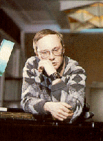
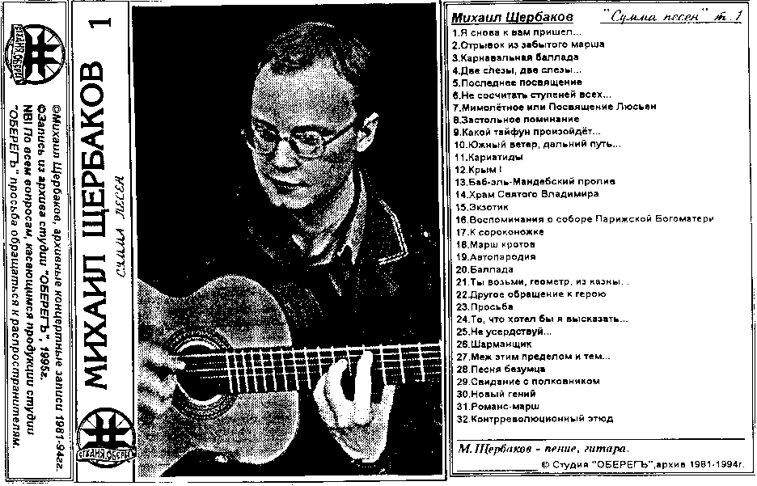
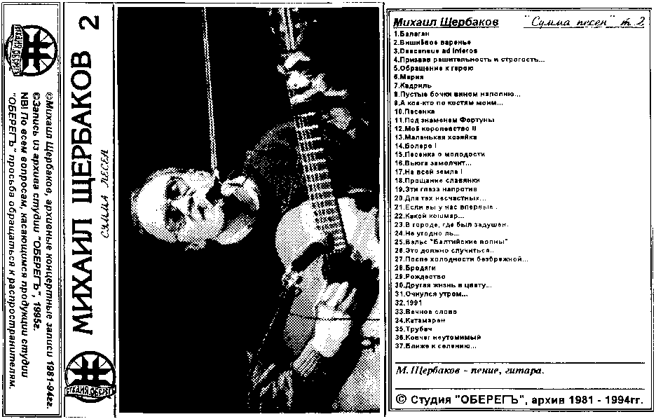

| Фотография с обложки кассеты "Мое Королевство", изданной объединением "Московские Окна". Бутлег, естественно — то есть, с продажи этой кассеты автор не получает ни копейки. |
|---|
 |
| Игорь Грызлов утверждает, что он видел в продаже более 10 разных бутлегов Щербакова, в том числе вот такие вот страшные (это не сканер виноват, это они и в самом деле такие). |
 |
 |